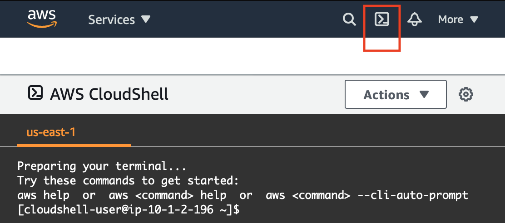
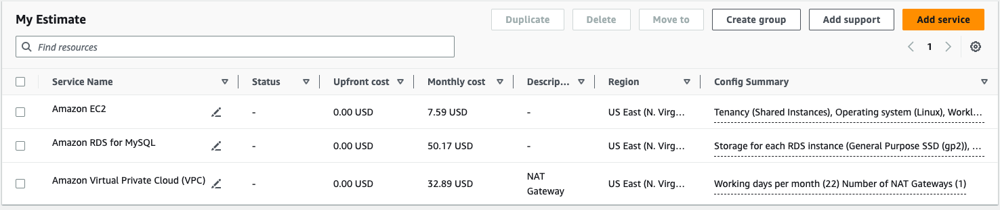

Environment Overview Environment Navigation Access the AWS Management Console Region restriction Service usage and other restrictions Using the terminal in the browser Running AWS CLI commands Using the AWS SDK for Python Preserving your budget Accessing EC2 Instances SSH Access to EC2 Instances SSH Access from Windows SSH Access from a Mac
Instructions last updated: 2025-06-24
This Learner Lab provides a sandbox environment for ad-hoc exploration of AWS services.
This environment is long-lived. When the session timer runs to 0:00, the session will end, but any data and resources that you created in the AWS account will be retained. If you later launch a new session (for example, the next day), you will find that your work is still in the lab environment.
Running EC2 instances will be stopped and then automatically restarted the next time you start a session. SageMaker notebook instances will be stopped, but not restarted the next time you start a session. SageMaker canvas apps will remain running unless you delete them.
IMPORTANT: Monitor your lab budget in the lab interface above. Whenever you have an active lab session, the latest known remaining budget information will display at the top of this screen. This data comes from AWS Budgets which typically updates every 8 to 12 hours. Therefore the remaining budget that you see may not reflect your most recent account activity. If you exceed your lab budget your lab account will be disabled and all progress and resources will be lost. Therefore, it is important for you to manage your spending. Read about how to preserve your budget.
Use the Readme link above to return to these instructions at any time.
Use the AWS Details link above to access information about your environment.
Tip: you can resize this panel at anytime by dragging the bar to the left of these instructions to make it wider or narrower.
Use the Reset link above if you ever want to reset your AWS account back to the way it was in the beginning, before you ever ran sessions of this lab environment. Note that it will not reset your budget. CAUTION: if you choose reset and then choose Yes to confirm that you do want to reset, you will permanently delete everything that you have created or stored in the AWS account.
At the top of these instructions, choose
Start Lab to start the lab session.
The lab session is started and session information is displayed.
A timer above shows the time remaining in the session.
Tip: You can refresh the session length at any time by choosing Start Lab again before the timer reaches 0:00.
Choose the Readme link to return to these instructions.
Connect to the AWS Management Console by choosing the AWS link above the terminal window.
You should be connected to the AWS Management Console.
Tip: If a new browser tab does not open, a banner or icon is usually at the top of your browser with the message that your browser is preventing the site from opening pop-up windows. Choose the banner or icon, and then choose Allow pop-ups.
Tip: if you are interested in interacting with the AWS account programmatically, read the Using the terminal in the browser section below for details.
All service access is limited to the us-east-1 and us-west-2 Regions unless mentioned otherwise in the service details below. If you load a service console page in another AWS Region you will see access error messages.
The following services can be used. Specific limitations apply as documented. Any attempt to exceed a service limit, may result in immediate deactivation of the AWS account and all resources in the account may be immediately deleted. Services restrictions are subject to change.
This service can assume the LabRole IAM role.
This service can assume the LabRole IAM role.
This service can assume the LabRole IAM role.
This service can assume the LabRole IAM role.
This service can assume the LabRole IAM role.
Supported Instance types: nano, micro, small, medium, large, and c4.xlarge. Note: Not all instance types are supported in all AZs.
Tip: When creating a new Cloud9 instance with the New EC2 instance environment type, in Network settings choose Secure Shell (SSH).
This service can assume the LabRole IAM role.
You can use Amazon Q suggestions in CloudShell if you switch from the default Bash to Z shell by running the zsh command. Once in the Z shell prompt, start typing a command to get suggestions. For example, type aws and then wait. It may offer a suggestion such as aws s3 cp s3://.... You can accept code completions by using the right arrow key on your keyboard. You can see alternate suggestions — if there are any available — before accepting a suggestion, by using the Tab key.
This service can assume the LabRole IAM role.
You can create a CloudTrail, but you cannot enable CloudWatch logging for the trail.
This service can assume the LabRole IAM role.
This service can assume the LabRole IAM role.
This service can assume the LabRole IAM role.
This service can assume the LabRole IAM role.
This service can assume the LabRole IAM role.
Supported Instance types: nano, micro, small, medium, and large.
Read the Concurrently running instances limits details documented in the EC2 service details below to be aware of further restrictions.
Recommendation: size to your actual need to avoid using up your cost budget.
This service can assume the LabRole IAM role.
To create an application: choose Create Application, give it an application name, choose a platform, then choose Configure more options. Scroll down to the Security panel and choose Edit. For Service role, choose LabRole. If the environment is in the us-east-1 AWS Region, for EC2 key pair, choose vockey and for IAM instance profile, choose LabInstanceProfile. Choose Save, then choose Create app.
Supported Instance types: nano, micro, small, medium, and large. If you attempt to launch a larger instance type, it will be terminated.
Maximum volume size is 100GB
PIOPs not supported
This service can assume the LabRole IAM role.
Supported AMIs:
AMI available in us-east-1 or us-west-2. For example, Quick Start AMIs, My AMIs, and Community AMIs.
AWS Marketplace AMIs are not supported. AMIs such as MacOS that must launch as a dedicated instance or on a dedicated host are also not supported.
Recommendation: To launch an instance with a guest OS of Microsoft Windows, Amazon Linux, or one of many other popular Linux distributions, choose "Launch Instances", then choose from the ones available in the "Quick Start" tab.
Supported Instance types: nano, micro, small, medium, and large.
On-Demand instances only
Concurrently running instances limits per supported region:
Maximum of 9 concurrently running EC2 instances, regardless of instance size. If you attempt to launch more, the excess instances will be terminated (and 9 will be left running).
Note: Service such as EMR, Elastic Beanstalk may also launch EC2 instances. The 9 concurrent running EC2 instances limit applies across all services that create instances visible in the EC2 console.
Maximum of 32 vCPU used by concurrently running instances, regardless of instance size or instance count. For example, t2.micro instances use 1 vCPU each, so you could run up to 32 of them in us-west-2 (but still only 9 of them in us-east-1 because of the other limitation listed above)
Note: The maximum 32 vCPU limit also applies across all services that create instances visible in the EC2 console.
Caution: Any attempt to have 20 or more concurrently running instances (regardless of size), will result in immediate deactivation of the AWS account and all resources in the account will be immediately deleted.
Recommendation: size to your actual need to avoid using up your cost budget.
EBS volumes - sizes up to 100 GB and type must be General Purpose SSD (gp2, gp3 ) cold HDD (sc1), or standard.
Key pairs - If you are creating an EC2 instance in any AWS Region other than us-east-1, the vockey key pair will not be available. In such cases, you should create a new key pair and download it when creating the EC2 instance. Then use the new key pair to connect to that instance.
The EC2 Fleet feature is not supported in Learner Labs.
A role named LabRole and an instance profile named LabInstanceProfile have been pre-created for you. You can attach the role (via the instance profile) to an EC2 instance when you want to access an EC2 instance (terminal in the browser) using AWS Systems Manager Session Manager. The role also grants permissions to any applications running on the instance to access many other AWS services from the instance.
Tips:
When your session ends, the lab environment may place any running instances into a 'stopped' state.
If you have enabled "Stop protection" on any instances, this protection will be removed when the session ends and the instance will still be stopped. Stop protection will not be re-enabled automatically when you later start a new session.
When you start a new session, the lab environment will start all instances that were previously stopped by you or stopped by the lab environment when the lab session ended.
Instances that have been stopped and started again will be assigned a new IPv4 public IP address unless you have an elastic IP address associated with the instance.
Recommendations:
To preserve your lab budget, stop any running EC2 instances before you are done using the account for the day (and terminate them if not longer needed).
Be aware of all instances you keep in the account between sessions because they will run (and cut into your budget) when you start the lab again unless you remember to turn stop them manually after starting the lab.
The LabRole IAM role has read-only access to this service and as a console user you have write access to this service.
Supported Instance types: nano, micro, small, medium, and large.
Tips:
When creating a cluster: To avoid permissions errors (cannot create role), if attempting to create a cluster that uses EC2 instances for the infrastructure (instead of Fargate), create an auto scaling group using the EC2 console first, then choose to use that existing auto scaling group when creating the ECS cluster.
If you see a message "the ECS service linked role could not be assumed" choose the back button and then try again. This sometimes happens if the service linked role does not yet exist in your account.
When creating a task definition: To avoid permissions errors, be sure to set LabRole as the task role and task execution role.
This service can assume the LabRole IAM role.
This service can assume the IAM Roles having identifier LabEksClusterRole created for Cluster and Node.
Supported Instance types: nano, micro, small, medium, and large.
This service can assume the LabRole IAM role.
This service can assume the LabRole IAM role.
Supported Instance types: nano, micro, small, medium, and large. If you attempt to launch a larger instance type, it will be terminated.
Tip: If you have any trouble successfully launching a cluster, try using the m4.large instance type. Example EMR cluster configuration details:
Cluster configuration: Instance groups, Primary: m4.large, Core: m4.large, Task -1: m4.large
Provisioning configuration: Core: 1 instance and Task -1: 1 instance
Security configuration: EC2 key pair: vockey
IAM roles: Amazon EMR service role: choose existing: EMR_DefaultRole, EC2 instance profile for Amazon EMR: choose existing: EMR_EC2_DefaultRole
Note: If you encounter the issue with S3 bucket creation as part of cluster creation:
Expand the section - Cluster logs and Uncheck the value for Publish cluster-specific logs to Amazon S3, and proceed with cluster creation. The logs will not be stored in s3 bucket, but cluster will get created.
Maximum of 32 vCPU used by concurrently running EC2 instances in an AWS Region. Note that you are also limited to launching no more than nine (9) instances (of any size) in a Region at once.
Note: An EMR cluster will not continue to work if your session ends. In Learner Labs, session end causes the EC2 instances that the EMR cluster uses to be stopped, and stopping an EMR cluster is not supported (by AWS). Recommendation: write EMR job results to S3 if you need to preserve your results, before you end your current Learner Labs session, then read the results back into a new EMR cluster as needed when you start your next Learner Labs session.
This service can assume the LabRole IAM role.
Use LabRole if creating an EventBridge Pipe.
This service can assume the LabRole IAM role.
This service can assume the LabRole IAM role.
Note: The following limitations apply to the AWS Glue ETL job configuration
Allowed Worker type: G.1X, Standard
Maximum number of workers: 10
Maximum Concurrency: 1
This service can assume the LabRole IAM role.
Extremely limited access. You cannot create users or groups. You cannot create roles, except that you can create service-linked roles.
Service role creation is generally permitted. If the service needs to create a role for you, you may need to retry role creation if it fails the first time.
A role named LabRole has been pre-created for you. This role is designed to be used when you want to attach a role to a resource in an AWS service. It grants many AWS services access to other AWS services and has permissions very similar to the permissions you have as a user in the console.
Example use: attach the LabRole via the instance profile named LabInstanceProfile to an EC2 instance for terminal in the browser access to an EC2 instance guest OS using AWS Systems Manager Session Manager.
Another example: Attach the LabRole to a Lambda function so that the Lambda function can access S3, CloudWatch, RDS, or some other service.
Another example: Attach the LabRole to a SageMaker notebook instance so that the instance can access files in an S3 bucket.
This service can assume the LabRole IAM role.
This service can assume the LabRole IAM role.
If attempting to create a Kineses Data Analytics Studio notebook, choose "Create with custom settings" and then choose LabRole in the IAM settings area.
If attempting to create a Kinesis Delivery Stream, choose "Advance settings" and then choose to use the existing LabRole.
Tip: Attach the existing LabRole to any function that you create if that function will need permissions to interact with other AWS services.
A maximum of 10 concurrent running Lambda execution environment instances are permitted. Reference the documentation to understand how concurrency is calculated.
Extremely limited read-only access.
Amazon Q Developer offers many features, including inline code suggestions that can be used in a variety of code editors including the AWS Lambda code editor. For a listing of IDEs that support generating inline suggestions, see the AWS Documentation.
Note: Some IDEs refer to the auto-suggestion feature under the name CodeWhisperer. CodeWhisperer features are moving to Amazon Q Developer.
This service can assume the LabRole IAM role.
Supported instance type: ra3.large
Supported cluster size: maximum two instances
This service can assume the LabRole IAM role.
Note: Service usage is subject to the following limits, which are sufficient for exploring service features or creating sample apps for educational purposes.
Rekognition Detected Face Limit - 1000
Rekognition Detected Label Limit - 1000
Rekognition Max Inference Unit - 1
Rekognition InService Inference Unit -1
This service can assume the LabRole IAM role.
Supported database engines: Amazon Aurora (Provisioned), Oracle, Microsoft SQL, MySQL, PostgreSQL and MariaDB. Note: if you are creating an RDS instance using a CloudFormation template, be sure to specify the engine type using lower-case letters.
Supported instance types: nano, micro, small, and medium (Tip: choose Burstable classes to find these).
Supported storage types: EBS volumes - size up to 100 GB and type General Purpose SSD (gp2). PIOPS storage types are not supported.
On-Demand DB instance class types only.
Enhanced monitoring is not supported (you must uncheck this default setting in the Additional configuration / Monitoring panel).
Tip: to preserve your lab budget, stop any running RDS instances before you are done using the account for the day (or terminate them if not longer needed).
Caution: When a lab sessions ends, the lab environment may not stop an RDS instance or cluster that you leave running. Also, even if you do stop an RDS instance, if you leave it stopped for seven days, AWS will start it again automatically, which will increase the cost impact.
This service can assume the LabRole IAM role.
You cannot register a domain.
This service can assume the LabRole IAM role.
Supported SageMaker instance types: ml.t3.medium, ml.t3.large, ml.t3.xlarge, ml.m5.large, ml.m5.xlarge, ml.c5.large, ml.c5.xlarge only.
Maximum Sagemaker Notebooks: 2
Maximum Sagemaker Apps: 2
To create a SageMaker Domain:
Choose Domains and then choose Create domain.
Choose Set up for organizations and choose Set up.
Step 1: Set up Domain details & users
Give the domain a name such as myDomain.
Keep the Login through IAM default.
Leave Who will use Sagemaker blank.
Choose Next.
Step 2: Configure roles and ML activities
Choose Use an existing role.
Set the Default execution role to LabRole.
Choose Next.
Step 3: Configure Applications
Note: Ignore and close any message about servicequotas:RequestServiceQuotaIncrease permissions issues.
In the StageMaker Studio panel, choose SageMaker Studio - New.
In the JupyterLab panel
Choose Enable idle shutdown and set it to 60 minutes.
Choose Allow users to set custom idle shutdown time and set the Maximum to 600.
In the Canvas panel
Choose Configure Canvas.
Scroll down to Canvas Ready-to-use models configuration and choose Use an existing execution role.
For Execution role name, choose Enter a custom IAM role ARN.
For Custom IAM role ARN, paste in the ARN of LabRole. It will be in the formation arn:aws:iam::ACCOUNT_ID:role/LabRole where ACCOUNT_ID is your actual Account ID.
In the CodeEditor panel:
Choose Enable idle shutdown and set it to 60 minutes.
Choose Allow users to set custom idle shutdown time and set the Maximum to 600.
Step 4: Customize Studio UI - Optional
Scroll to the bottom and choose Next.
Step 5: Set up network settings
Choose either VPC only or Public internet access are both options.
Example:
Choose VPC Only.
For VPC for Studio to use: Choose the Default VPC.
Choose the VPC Console link. A new browser tab opens the VPC console. In the Resource map tab, make note of the subsets that are public. Public subnets are the ones that are connected to a route table that routes to an "igw-..." (internet gateway) network connection.
Back in the SageMaker console, choose at least two of the identified public subnets.
Choose the default security group.
Choose Next.
Step 6: Configure storage
Scroll to the bottom and choose Next.
Step 7: Review and create
Scroll to the bottom and choose Submit.
Wait for the Domain to be created. It typically takes 5 to 8 minutes to complete. Refresh the browser tab occasionally to more quickly know when it has completed.
To create a SageMaker user profile:
In the list of SageMaker domains, choose the name link of the domain you created.
In the User profiles tab, choose Add user.
In General settings, for Execution role choose LabRole and then choose Next.
In Step 2: Choose Next.
In Step 3: Choose Next.
In Step 4: Keep Inherit settings from domain selected and choose Next.
In Step 5: Scroll to the bottom and choose Submit.
To create a Code Editor space, so that you can use Visual Studio Code Open Source:
Choose Studio.
In the Get started panel, verify the user profile you created is selected and choose Open Studio.
Choose Skip Tour for now then from the Applications panel choose Code Editor.
Choose the Create Code Editor space button in the top right corner.
Give it a name such as mySpace and then choose Create space.
Verify the space settings before running it. The defaults, such as the default ml.t3.medium instance type are supported.
Choose Run space.
Once the space has started choose Open Code Editor.
A new browser tab opens, displaying an IDE. Refer to the AWS Documentation to learn more about Code Editor in SageMaker Studio.
There is limited support for SageMaker Studio features. Some SageMaker JumpStart projects require more access permissions than we can grant in Learner Labs.
To use SageMaker Studio, first create a SageMaker domain and user profile (steps documented above).
Once you have a domain and user profile, choose Studio. Then, from Applications list in the top left corner, choose an application.
For example, choose JupyterLab and then choose Create JupyterLab space. Give the space a name and choose Create space. Then choose Run space. Wait for the JupyterLab space to start, then choose Open JupyterLab. Once in the JupyterLab UI can you claunch a notebook, console, or other type of resource.
If you have a running studio space, it will appear as a running App in the SageMaker Studio console.
There is limited support for SageMaker Canvas features. There are many SageMaker Canvas models (including many Ready-to-use models) that are not supported in Learner Labs. For example, if a model is "powered by" an AWS service that is not supported in Learner Labs, then the model will not run in Learner Labs.
To use SageMaker Canvas, first create a SageMaker domain and user profile (see the steps above).
Once you have a domain and user profile, from the User profiles list in the row with the profile you want to use, choose Launch > Canvas. The SageMaker Canvas console appears.
You can create SageMaker Notebook instances.
Tips to preserve your budget:
Choose the SageMaker dashboard link to view recent activity including running jobs, models, or instances. Stop or delete anything that is running and that you no longer need.
When your session ends, the lab environment may place running SageMaker notebook instances into a 'stopped' state. Stopped SageMaker notebook instances will not be automatically restarted when you start a new session.
When using SageMaker Canvas or SageMaker Studio, logout of the session when you are done working with it. Consider deleting SageMaker Canvas and SageMaker Studio apps that are no longer needed.
This service can assume the LabRole IAM role.
This service can assume the LabRole IAM role.
This service can assume the LabRole IAM role.
This service can assume the LabRole IAM role.
This service can assume the LabRole IAM role.
You cannot create a vault lock
A role named LabRole and an instance profile named LabInstanceProfile have been pre-created for you. You can attach the role (via the instance profile) to an EC2 instance when you want to access an EC2 instance (terminal in the browser) using AWS Systems Manager Session Manager.
AWS CloudShell is an AWS service that provides a terminal in the browser. You can access it in the AWS Management Console, at the top of the screen, by choosing the AWS CloudShell icon (highlighted in red in the screen capture below).

Other ways to access a terminal in the browser:
Launch an EC2 instance to which you have attached the LabInstanceProfile (which attaches the LabRole IAM role) and then connect to the terminal on it using EC2 Instance Connect.
Further tips:
AWS CloudShell and EC2 instances of type Amazon Linux 2 have the AWS CLI client already installed.
AWS CloudShell has AWS account credentials pre-configured in the environment.
Here is an example AWS CLI command to try running in a terminal. If you have created any EC2 instances in the default account Region, running this command will provide information about them:
aws ec2 describe-instancesSee the AWS CLI Command Reference documentation for details on how to use the AWS CLI.
AWS CloudShell also has Python 3 installed with the boto3 library available. You can use it to run AWS Python SDK code. For example:
xxxxxxxxxx$ python3>>> import boto3>>> ec2 = boto3.client('ec2', region_name='us-east-1') >>> ec2.describe_regions()>>> exit()$See the documentation for details on how to use the AWS SDK for Python.
Remember, if you exceed your lab budget your lab account will be disabled and all progress and resources will be lost. Details on how to monitor your budget are provided above.
Suggestions to avoid overspending:
Launch only the number of instances you need, sized to your requirements.
Typically, it is compute-type resources that you leave running that most quickly use up your budget. Turn these off when no longer needed, or better yet, delete them.
Example compute-type resources:
EC2, RDS, NAT Gateway
SageMaker notebook instances, and SageMaker canvas apps.
EMR, ECS or EKS clusters
Elastic Beanstalk applications
Use the AWS Pricing Calculator to estimate cost.
For example, the estimate shown in the screenshot below calculated the cost of running the following resources for a month:
One t3.medium size Linux EC2 instance running 6 hours per day for a month in the us-east-1 Region.
One db.t2.small size MySQL RDS database with 30GB of storage, in a single AZ, left running for a month in the us-east-1 Region.
One NAT Gateway left running, processing 1GB per month in the us-east-1 Region

Pricing is subject to change. The calculation above is only an example from a point in time in the past.
Additional suggestions for how to reduce cost:
Discover what resources exist in your account using the Tag Editor feature.
Note: This tool does not find all resource types, but it can locate many types.
Open the Resource Groups & Tag Editor console and choose Tag Editor.
For Regions, choose us-east-1 and us-west-2 and for Resource types, choose All supported resource types. Finally, choose Search resources.
Give the search a moment to complete. You will see a large number of warnings appear at the top of the screen, indicating that you do not have permissions to view certain resources. You can ignore these warnings.
Scroll down to the Resource search results panel to see the resources that were found.
Some of the resources already existed in your account when you started the lab and they will not use up a significant amount of your budget. These include IAM resources, two Lambda functions, a number of security groups and other VPC-related resources.
However, you may notice other resources in the search results that are resources you created, and perhaps no longer need.
Build your solutions using CloudFormation templates.
You can use the service to create a stack that creates multiple resources across AWS services. Then, when you don't need the resources anymore, delete the stack (which will delete all the resources it created). You can always, use the same template to create a new stack to create the resources again during your next session.
Access AWS Trusted Advisor and review the cost optimization results. The service can help you to identify EC2 instances with low utilization rates, idle RDS instances or Classic Load Balancers, under utilized EBS volumes, and other conditions that can help you save the money remaining in your lab budget.
When launching EC2 instances in the default us-east-1 Region in this environment, choose the option to use the existing key pair named vockey at the time of launch. Then:
Choose the AWS Details link above these instructions.
If you are using a Windows desktop or laptop, choose the Download PPK button and save the labsuser.ppk file. You can use this file to connect via SSH to a Linux EC2 instance or Windows EC2 instance, typically using a tool such as PuTTY.
If you are using a MacOS desktop or laptop, choose the Download PEM button and save the labsuser.pem file. You can use this file to connect via SSH to a Linux EC2 instance or Windows EC2 instance, typically using a terminal window.
To connect via Remote Desktop to a Windows EC2 instance:
In the EC2 Console, choose Instances and choose the instance you want to connect to
From the Actions menu choose Get Windows Password
Next to Key Pair Path choose Browse.
Browse to and select the labsuser.pem file you downloaded earlier.
Choose Decrypt Password.
The connection information will now display, including the instance's Public DNS, Administrator user name, and the decrypted password.
Use a Remote Desktop Protocol (RDP) client to connect to the desktop of the EC2 instance using these connection details.
To connect using SSH to a Linux instance, see the next section.
The steps below describe how to use the SSH key to connect to your instance.
Tip: Assuming you launched the instance with the vockey key pair, and that you have opened TCP port 22 in the instance's security group, you can also SSH to an EC2 instance by using the terminal to the side of these instructions. The terminal already has the key pair available to it. Simply enter the command ssh -i ~/.ssh/labsuser.pem ec2-user@<public-ip> where <public-ip> is the actual IPv4 public address of the instance.
These instructions are for Windows users only.
Download needed software.
You will use PuTTY to SSH to Amazon EC2 instances. If you do not have PuTTY installed on your computer, download it here.
Open putty.exe
Configure PuTTY to not timeout:
Choose Connection
Set Seconds between keepalives to 30
This allows you to keep the PuTTY session open for a longer period of time.
Configure your PuTTY session:
Choose Session
Host Name (or IP address): Copy and paste the IPv4 Public IP address for the instance. To find it, return to the EC2 Console and choose Instances. Check the box next to the instance and in the Description tab copy the IPv4 Public IP value.
Back in PuTTy, in the Connection list, expand SSH
Choose Auth (don't expand it)
Choose Browse
Browse to and select the .ppk file that you downloaded
Choose Open to select it
Choose Open
Choose Yes, to trust the host and connect to it.
When prompted login as, enter: ec2-user
This will connect you to the EC2 instance.
These instructions are for Mac/Linux users only.
Read through the two bullet points in this step before you start to complete the actions, because you will not be able see these instructions when the AWS Details panel is open.
Choose the AWS Details link above these instructions.
Choose the Download PEM button and save the labsuser.pem file.
Typically your browser will save it to the Downloads directory.
Open a terminal window, and change directory cd to the directory where the .pem file was downloaded.
For example, run this command, if it was saved to your Downloads directory:
xxxxxxxxxxcd ~/DownloadsChange the permissions on the key to be read only, by running this command:
xxxxxxxxxxchmod 400 labsuser.pemReturn to the AWS Management Console, and in the EC2 service, choose Instances.
Check the box next to the instance you want to connect to.
In the Description tab, copy the IPv4 Public IP value.
Return to the terminal window and run this command (replace <public-ip> with the actual public IP address you copied):
xxxxxxxxxxssh -i <filename>.pem ec2-user@<public-ip>Type yes when prompted to allow a first connection to this remote SSH server.
Because you are using a key pair for authentication, you will not be prompted for a password.
© 2022 Amazon Web Services, Inc. and its affiliates. All rights reserved. This work may not be reproduced or redistributed, in whole or in part, without prior written permission from Amazon Web Services, Inc. Commercial copying, lending, or selling is prohibited.